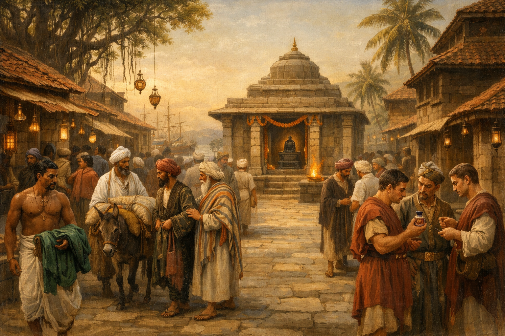

A History of the Kingdom of Avanti
The Story
of Avanti
From the Arabian Sea to the Present Day

305 BCE
In 305 BCE, the most powerful man in the world had a problem that most powerful men never bother to think about.
His name was Chandragupta Maurya, and he had done something that no one in Indian history had managed before him: he had unified the subcontinent. Not most of it. Not the important parts. Nearly all of it. Starting from a small kingdom in Magadha — roughly where Bihar is today — he had, in the space of about twenty years, built an empire that stretched from the Hindu Kush in the northwest to the Bay of Bengal in the east, and deep into the Deccan in the south. He had done this partly through military genius, partly through strategic ruthlessness, and partly through the guidance of his extraordinary minister Chanakya, whose handbook on statecraft — the Arthashastra — remains one of the most clear-eyed analyses of political power ever written.
He had also, almost in passing, defeated the generals left behind by Alexander the Great. When Alexander died in Babylon in 323 BCE, his empire began to fracture. His successor in the northwest of India, Seleucus Nicator, eventually tried to push back into the subcontinent and found Chandragupta waiting for him. The resulting treaty gave Chandragupta five hundred war elephants and sovereignty over territories stretching to modern Afghanistan. Seleucus sent his daughter to marry into the Mauryan court. This was not a negotiation between equals.
By 305 BCE, Chandragupta had built an administrative machine that could tax, feed, and conscript more people than any state in Asia had ever managed. He was, by any reasonable measure, done.
And yet.
Out in the Arabian Sea, roughly where the subcontinent's western coast stops and the open ocean begins, there were islands. Sailors knew about them — had known for generations. Fishermen working the outer waters had seen them in clear weather. Merchants making the passage from Bhrigukaccha to the Persian Gulf had sheltered in their coves when storms came. What they reported was consistent and, to an emperor, tantalising: fertile land, freshwater streams, good anchorage. And no king.
This last detail was the interesting one.
In Chandragupta's world, every piece of useful land had a king. Kings were as natural a feature of the landscape as rivers or mountain ranges — they were simply there, and you either paid tribute to them or you conquered them. Islands with no king were an anomaly. An open question. Perhaps there were people living there who had simply not yet organised themselves into a kingdom. Perhaps there was something worth having and nobody had thought to claim it yet. Perhaps it was nothing — a way station for birds and tired sailors.
Chandragupta was not the kind of man who left open questions open. He had not built the largest empire in Indian history by ignoring anomalies.
The reports from the sailors were maddeningly vague. The islands were green — that much everyone agreed on. Mountains, rivers, good water. One merchant thought he had seen a blue vein in a cliff face while sheltering from a storm, though he hadn't gone to investigate. A fisherman spoke of extraordinary depth of colour in the eastern ranges, visible even from the sea. Nobody had landed and looked properly. Nobody had counted the islands or mapped the coast. Nobody knew, with any confidence, what was there.
It was worth finding out. And — this was the elegance of Chandragupta's thinking — it was worth letting someone else find out first. If the islands held nothing, the vassal had spent a year and come back with nothing, and the only cost was the expedition. If they held something, the emperor had a new asset. The risk was not his. The reward would be.
He issued the challenge to his vassals: go, spend a year, find something of value, claim the land in my name. He would reward whoever answered. He probably thought about it for less than an afternoon.
What he had actually done — though he would never know it, and neither would anyone alive at the time — was set in motion a civilisation that would outlast his empire by more than two thousand years.
The man who took up the challenge was named Vitihotra, and he understood opportunity the way only second sons understand it.
He was the younger brother of the king of Avanti — not the island Avanti, which did not yet exist, but the original one, a prosperous kingdom in west-central India. His brother Udravya had the throne. Udravya did not yet have children, which meant that technically, mathematically, Vitihotra was next in line. This was cold comfort. Udravya was healthy. He would have children. The line of succession that currently included Vitihotra would, within a decade, contain enough princes to make his position entirely theoretical.
Vitihotra was clever enough to see this clearly and ambitious enough to find it intolerable.
Chandragupta's challenge was, at minimum, a year's adventure. At best — if those islands held what the emperor hoped — it was a kingdom of his own. Vitihotra said yes.
With imperial funds and imperial authority behind him, he assembled 1,500 people. Not soldiers. A community. Warriors, yes, but also blacksmiths and miners, merchants and farmers, carpenters and cooks, physicians and priests — and all of their families. He understood, with the instinct of someone who had thought hard about what survival actually required, that you do not build something lasting with soldiers. You build it with people who intend to stay.
Five complete family clans formed the backbone of the expedition: the Vijayin, Chandra, Pradyotin, Vardhan, and Parashar. Three dhows loaded everything they could carry. They departed from Bhrigukaccha — the great port at the mouth of the Narmada, where the river meets the Gulf of Khambhat and the whole world comes to trade — on the eleventh day of Kartik in the seventeenth year of Chandragupta's reign. The date is preserved in the Amravati Archive to this day, copied and recopied without interruption for two thousand years.
We know when they left. We are less certain where they arrived.
The Question of the Landing
The question of where Vitihotra first made landfall has generated more scholarly argument than almost any other question in Avantian history, which is saying something for a civilisation that has been arguing about its own past for two millennia. The traditional account places it at the mouth of the Mugdha river, sanctified by the Pushpeshwar temple whose founding legend is traced to those very first days. Generations of priests have a strong interest in this version.
Most modern historians find a competing account more convincing — that the landing was at the estuary of the Aparganga, on the basis of a legend so persistent and so widely recorded that it probably contains something true: that Vitihotra, in the first weeks of settlement, got down in the mud alongside the farmers and personally helped dig the irrigation canals that brought drinking water to what would become the town of Avantika.
This is the kind of detail that survives because it matters to people. A founder who digs canals is a different kind of founder. Whether Vitihotra literally did it, or whether the story grew up around him because it described something true about how he led — either way, the tradition preserved it, kept it, passed it forward.
The First Year
The first year was not what we might imagine when we picture people settling an unknown land. There was no desperate struggle against an alien climate. The archipelago lay in the same geographic zone as the India they had left — same rains, same crops, same growing season. They planted rice and vegetables and the earth cooperated. They were not going to starve.
What they were going to do, if they returned to Bhrigukaccha empty-handed, was disappoint an emperor. And so the real work of the first year was not survival. It was search.
Vitihotra organised it the way he organised everything — personally, methodically, and without the assumption that rank exempted anyone from hard work. Expeditions went into the mountain ranges. Others followed the rivers upstream. Coastal parties mapped the smaller islands. Warriors walked alongside miners. The settlements at Avantika were functional but provisional; everyone understood that what they found, or failed to find, would determine whether any of this was permanent.
Months passed. The mountains yielded timber. The soil was deep and generous. The fishing was extraordinary. But none of this was what Chandragupta had sent them to find. An emperor with a million acres of farmland did not need more farmland.
It was not until the very end of the sailing season — when the window for sending a ship back to India was almost closed, when the rains were changing and the winds that had brought them here were preparing to shift — that a mining expedition in the eastern ranges found what they had been looking for.
A blue vein in a cliff face. Brilliant, saturated, unmistakable.
It ran through the rock in a seam as wide as a man's hand, and similar formations were visible further along the range. The team was uncertain what they had. But one member — a merchant who had spent years handling luxury goods in Bhrigukaccha — turned a piece of it over in his hands and thought of the lapis lazuli beads he had traded from the northwest. The colour was right. The weight was right.
They gathered every sample they could carry. A small contingent was dispatched back to India with the news. The rest stayed.
The year's obligation to the emperor had been met. Whether to remain was now a question each family answered for itself.
Most stayed. Something was beginning here. They could feel it.
↑ Return to Contents305–180 BCE
The lapis samples reached Bhrigukaccha and caused immediate excitement. Chandragupta's traders knew exactly what they were looking at. What the archipelago held was not a modest deposit but a potentially significant one — and the islands, they now understood, deserved a proper investment. More miners. Shipbuilders. Merchant capital. Families with the means and the nerve to stay.
Within the first two years of Vitihotra's landing, a second wave arrived. Seven further family clans came as part of this organised expansion — the Gupta, Yadav, Suryavanshin, Acharya, Vyas, Manikandin, and Somnathin. They brought with them resources and expertise that the original five could not have provided alone: merchant networks that stretched from the Deccan to the Persian coast, scholars and priests who could give the settlement's institutions their proper form, and the capital to turn a hopeful encampment into a real town.
Together, these twelve clans became the founding families of Avanti. They are the same twelve families whose descendants would, two thousand years later, still hold seats in the Mitragan — the council at the heart of Avantian government. If that feels like an extraordinary continuity, it is, because it is almost unparalleled anywhere in the world. The names changed slightly over the centuries. Some families merged. Some nearly died out. But the framework held.
The Mauryan commercial arrangement was formalised at this point: anything of value extracted from the islands must route first through Bhrigukaccha. The islands were, formally, a Mauryan resource. Vitihotra governed them as Chandragupta's man. For now, this was acceptable to everyone. The market that Chandragupta's empire provided was enormous. The protection his name offered was real. There were worse arrangements for a young settlement than being the emperor's favourite project.
For five or six generations, it worked.
The Carpenter
The Amravati Archive — which has recorded every significant event in Avantian history for over two thousand years without interruption — contains no written account of the following story. It exists entirely in oral tradition, passed down within the communities descended from the artisan and farming contingents of the original expedition. It was never committed to writing. It was carried in memory, told to children, invoked in disputes.
Which is precisely why it matters.
In the first year of the settlement, a senior member of the expedition — Vitihotra's own uncle, the oral tradition says, a kshatriya of rank — struck and badly injured a carpenter. The injury was serious enough to prevent the man from working. Under the legal norms that everyone in the expedition had grown up with, this was straightforward: injury to a sudra by a kshatriya carried a financial penalty. A fine would be paid. The matter would close.
Vitihotra refused.
His reasoning, as the tradition records it, was not a lecture about justice or human dignity. It was blunter than that, and more practical. They were 1,500 people on an island in the middle of the Arabian Sea. Every person was load-bearing. A carpenter who could not work meant structures that could not be built, boats that could not be repaired, tools that could not be made. Injuring one person in this community was not a private matter between two individuals of different varna — it was an attack on everyone's survival. Vitihotra punished his uncle accordingly, and publicly.
We cannot verify any of this. We have no way to know if it happened, or exactly how it happened, or whether the tradition preserved the original story faithfully or reshaped it over time into something more useful. What we do know is what the sudra-descended communities did with it. They carried it forward as a precedent. A claim. In disputes about how a craftsman or farmer should be treated — and there were many such disputes, over many centuries — this story could be invoked. Vitihotra himself set the rule. The carpenter's work made him equal to the warrior. It had always been this way.
Whether the legend created Avantian egalitarianism, or whether it simply articulated something that pioneer conditions had already made practically true, is a question Avantian historians have debated without resolution. Both things are probably true in different proportions. What is not in question is that this story — unwritten, unofficial, never endorsed by any king or council — functioned as a social fact for the people who carried it. It gave ordinary Avantians a language for fairness that existed entirely independently of what any written law said.
That is not nothing. In the long run, it may have been everything.
↑ Return to Contents180–100 BCE
Independence, when it finally came, arrived quietly.
There was no battle. No declaration read from a palace balcony to a cheering crowd. No moment that anyone present would have recognised, with certainty, as the hinge of history. Vishnuhotra — a descendant of Vitihotra bearing a new regnal name, the founder's name with one letter shifted, as if marking both lineage and departure — simply stopped sending tribute to Bhrigukaccha. The Mauryan empire, in its final generations of slow unravelling, did not respond. It had larger problems than a set of islands in the Arabian Sea that it had never, in truth, governed very directly.
The freedom the Avantian families had wanted for a generation turned out to be exactly what they had imagined, and also nothing like it.
What they had imagined: the right to sell their lapis and their haritar to whoever would pay the most, without a Mauryan agent taking his share off the top. The right to set their own customs rates. The right to decide, without consulting anyone in Bhrigukaccha, which ships were welcome in their harbours and which were not.
What they had not imagined: that all of this would require, immediately and urgently, a completely new set of institutions. That the structures Vitihotra had built for a settler community of 1,500 people reporting to an emperor were not the same structures you needed for a sovereign trading state of — by this point — something closer to 40,000. That freedom, it turned out, was not the end of a problem. It was the beginning of a much more interesting one.
The Partnership That Was Not Yet a Constitution
The first independent kings were capable men. History has not made them famous, which is itself a kind of verdict — they did not transform Avanti, they maintained it, and maintenance is unglamorous work that tends to disappear from the record. What the chronicles preserved, and what later historians found significant, was not any individual deed but a pattern: generation by generation, the twelve families built something that looked less like a royal court and more like a partnership.
This was partly practical. The king's household could not, by itself, run a trading state. It did not have the commercial intelligence — the knowledge of which Persian merchants were creditworthy, which Arab captains knew the southern routes, which seasons were safe for the passage to the Coromandel coast. That knowledge lived in the merchant families. A king who ignored them was a king who made expensive mistakes. A king who consulted them made money. The consultation, repeated across enough generations, hardened into expectation. The expectation, repeated across enough generations, hardened into something that felt, if not quite like law, then like the natural order of things.
Nobody designed this. It is important to say that clearly, because Avantian historical writing has a tendency — understandable, perhaps inevitable — to find intention in what was mostly improvisation. The partnership between crown and merchant families in these early independent centuries was not a constitutional arrangement. It was a habit. But habits, given enough time, become constitutions.
The Colour That Could Not Be Replicated
It was in these same generations that Avanti discovered what it actually had.
The lapis lazuli had made the islands wealthy. The haritar would make them something rarer: irreplaceable.
The discovery was not a single moment but a long process of accident and experiment that unfolded across several generations. What the early miners had found in the eastern ranges was not, it turned out, simply lapis — though there was lapis, and it was valuable. What made the eastern deposits extraordinary was a mineral combination found nowhere else in the known world: a blue-green copper carbonate fused with chromite in a ratio that produced, when processed through a method the Avantian craftsmen developed slowly and jealously, a pigment of extraordinary stability and depth. It did not fade in sunlight. It did not bleed in water. Applied to cloth, it produced a green of such saturated richness that merchants who saw it for the first time reached for superlatives and found them inadequate.
The Avantians called it haritar — from the Sanskrit for the colour of young grass, of new growth, of the moment just after rain when the world looks as though it has been made again.
The processing method was kept secret. Not by royal decree — at least not initially — but by the craft families who had developed it, who understood without being told that the value of what they had depended entirely on nobody else having it. The knowledge passed from parent to child, within a small number of families, with the particular intensity of people who know that what they are transmitting is not just a skill but a livelihood and an identity. Other states tried to replicate it. None succeeded. The mineral combination was unique to the Avantian eastern ranges; the processing method was unknown outside the craft families; and the craft families were not leaving.
The Problem of Other People's Ships
Wealth, in the ancient world, was an advertisement. And advertisements attracted the wrong kind of attention.
As haritar's reputation spread along the Arabian Sea trade routes — through the markets of the Deccan, into the Persian Gulf, west to the Red Sea ports and east to the Coromandel coast — Avanti began to matter in a way it had not when it was simply a Mauryan dependency of moderate interest. The islands that had once been a way station for tired sailors were now a place that sophisticated merchants actively sought out. They came in greater numbers each season. They came with more money. They came with more ships.
And eventually, as night follows day in the history of commerce, some of them came with armed escorts that were considerably more interested in extracting a toll than in buying cloth.
The pattern was familiar throughout the Indian Ocean world. A trading port becomes prosperous. Word spreads. Ships begin appearing whose hulls sit too low in the water for their declared cargo — packed not with trade goods but with fighting men. Their captains present themselves as merchants, ask to see the warehouses, make inquiries about the processing facilities in the eastern highlands, propose partnerships that on closer examination look remarkably like extortion. When rebuffed, some of them simply wait in the outer waters and intercept Avantian merchant ships on their way to and from the mainland.
The Mauryan name, which had once provided a degree of protection by association, was by now worth very little. The empire was dissolving. No imperial fleet was going to appear on the horizon to discourage raiders. The twelve families were on their own.
Their solution was entirely natural and entirely reasonable: arm your own ships.
Wood, Water, and the Birth of a Fleet
What made this solution possible — and what turned it, over time, into something far more significant than a defensive measure — was a resource the early settlers had noted and never quite fully appreciated: timber.
The eastern highlands of the main island were covered in dense forest. The trees were old, straight, and of a density that master shipwrights, when they eventually came to examine them, found extraordinary. The same mountains that hid the haritar deposits in their rock faces grew the raw material for the ships that would carry haritar to the world. It was the kind of coincidence that later historians would describe as providential and that a clear-eyed observer would recognise as simply good geology — the same volcanic formation that produced the mineral deposits had, over millions of years, created the soil conditions that produced the forests.
In the early decades of independence, the twelve families began building in earnest. Arab master shipwrights, drawn by the quality of the timber and the reliability of Avantian payment, began settling on the islands. Indian craftsmen followed. The knowledge of how to build a deep-water vessel accumulated in the island yards the way all valuable knowledge accumulates: slowly, through practice, through failure, through the gradual refinement of technique across generations of hands.
By the middle of this period, Avanti had genuine shipbuilding expertise. Not borrowed. Not dependent on craftsmen who might leave. Its own, held in the heads and hands of families who had put down roots in the island soil and intended to stay.
The armed merchant escorts that each family maintained grew as this expertise grew. A family with armed ships at sea was a family with weight — not just commercial weight but something harder to precisely name, a kind of presence in any room where decisions were being made. The twelve families, separately and without any coordination, were becoming powers in their own right.
The Geography of Defence
There was something else the families were learning in these years, quietly and almost without realising it: their islands were not just a place to live and trade. They were a fortress.
The archipelago's thirty-seven islands were separated by sixteen named straits — channels of varying width, depth, and current, with navigational characteristics that changed with the season, the tide, and the wind direction. A ship that knew these straits intimately could do things in them that an unfamiliar ship could not. It could disappear around a headland and reappear in a position its pursuer could not anticipate. It could draw a heavier vessel into a channel too shallow for its draft. It could use the tidal races that ran through the narrowest passages to accelerate when pursuit was close, or to ambush when approach was expected.
None of this was doctrine yet. It was simply knowledge — the accumulated experience of fishermen and traders who had spent their lives in these waters, passed on to their children the way all intimate geographic knowledge is passed on: through use, through repetition, through the kind of familiarity that becomes instinct.
But instinct, when the moment requires it, is faster than doctrine. The seed of the Battle of the Straits — the engagement that would shatter a Portuguese fleet fifteen centuries later and establish Avantian sovereignty over the Arabian Sea — was planted here, by fishermen who simply knew which way the current ran at the third hour of the flood tide in the Rupakir Strait.
The Satavahana Connection
It was also in this period that Avanti made serious contact with the Satavahana kingdom on the Deccan plateau, and the consequences of that contact would take centuries to fully work themselves out.
The Satavahanas were, by the second century BCE, the dominant power of peninsular India. They were also, by the standards of their time and region, unusually interested in ideas. Their court supported Sanskrit scholars, Buddhist philosophers, Tamil poets. Their trade networks ran from the Arabian Sea to the Bay of Bengal. When Avantian merchants began appearing regularly in Satavahana ports — selling haritar, buying cotton and spices, exchanging the commercial intelligence that always travels alongside cargo — they brought something back that was harder to quantify than cloth or pepper.
They brought scholars.
Not immediately, and not in any organised way. At first it was simply the movement of learned men along trade routes, as it had always been — a teacher travelling with a merchant caravan, a priest accompanying a ship's crew, a young man from a Satavahana monastery finding his way to an island he had heard about from a sailor. The ashram that Vitihotra had established at Amravati found itself, almost without noticing, in conversation with a much wider intellectual world.
What the Satavahana contact gave Avanti was not any single idea but a habit of mind: the understanding that a civilisation serious about itself takes its learning seriously. That an institution devoted to knowledge is not a luxury to be funded in prosperous times and cut in lean ones, but an infrastructure as essential to a functioning state as a harbour or a signal chain. This understanding would not produce Amravati University in its mature form for another century. But the seed was here.
The Problem That Was Forming
By the end of this period — in the decades approaching 100 BCE — Avanti was, by any measure, a success. The trading routes were established. The haritar monopoly was intact and enormously profitable. The shipyards were productive. The population had grown to something approaching a hundred thousand people spread across the main islands. The twelve families were wealthy, well-organised, and deeply rooted.
And there was a problem forming that nobody had yet named clearly, precisely because it was made of the same material as all the things that were going well.
Each of the twelve families now maintained its own fleet. Each fleet had its own armed contingent. The escorts had grown because the threat had grown — and also because wealth accumulates, and accumulated wealth tends to express itself in ways that make it feel more secure. A family with twenty armed ships was simply not the same kind of actor as a family with two. Its interests could, if circumstances aligned badly, diverge from the king's interests. Its decisions could, if a weak king allowed it, be made without reference to the king at all.
No family was yet acting on this logic. The system was still cooperative, still oriented toward the collective good, still held together by the habits of partnership that had formed in the Mauryan period and deepened in the first generations of independence. But the structure that would eventually make those habits unreliable — private military power distributed across twelve competing interests — was already in place.
It would take a specific kind of king to see this problem clearly and do something about it. A king with the commercial instincts of a merchant, the strategic patience of a builder, and the political skill to dismantle an existing power arrangement without triggering the war that such dismantling usually provokes.
His name would be Mitraman. He was not yet born. But the problem he would solve was already waiting for him.
↑ Return to ContentsThe Dvaya Era · ~100–20 BCE
Every civilisation, if it lasts long enough, eventually produces the leaders it needs. The question is whether the institutions survive long enough for that to happen.
By the time Mitraman came to the throne — the eighth king of the Avantian dynasty to bear that name — the problem that had been forming for three generations had ripened into something that could no longer be ignored. The twelve founding families each maintained their own armed fleets. The accumulated naval power distributed across twelve private interests had grown, through decades of haritar wealth, into something that dwarfed the royal household's own capacity. Any one of the larger families could, if it chose, make the king's life very difficult. Two or three acting together could have replaced him. They had not done so, because no crisis had yet made it worth the trouble. But the structure that made it possible was there, waiting.
Mitraman saw this clearly, which was rare. More unusually, he did something about it, which was rarer still.
The Naval Consolidation
What Mitraman proposed was not, on the surface, a power grab. It was an exchange. Each family would contribute to a common naval fund. The crown would provide a standardised armed escort service for all merchant ships, regardless of which family owned them. Private armed escorts would be retired or transferred to royal command. In return — and this was the crucial part — Mitraman surrendered something too: the royal customs exemption, applying the same tax rules to the crown's own commercial interests as to everyone else's.
He sweetened the arrangement further with land grants near Mahishmati for families who surrendered significant naval assets. He was not confiscating. He was buying. The distinction mattered enormously to people whose sense of honour was bound up in the propriety of how transactions were conducted.
Most families accepted. The holdout was the Gupta clan — the wealthiest merchant family and the one with the most to lose from a standardised escort service that treated everyone equally. For a family whose competitive advantage partly rested on having better armed escorts than anyone else, the consolidation was not a neutral proposition. It was a direct threat to the commercial edge that had given them their advantage for two generations.
Mitraman solved the Gupta problem the way diplomats have solved intractable problems since the invention of diplomacy: he proposed a marriage. His daughter Princess Suveera married into the Gupta family. The families' interests were now aligned in the most literal possible way. The Gupta fleet was absorbed into the Royal Avantian Navy. The last holdout was in.
The Royal Avantian Navy — formally constituted, centrally commanded, funded by collective contribution — was born.
The University
Mitraman endowed the Amravati ashram in the same period — around 90 BCE — with a permanent royal grant and a formal charter. He had a practical reason: the administrative requirements of a state that was, for the first time, managing a single integrated naval command and a unified customs system were beyond what the existing household staff could handle. He needed trained land surveyors, customs agents, and administrators. The ashram would produce them.
What he had actually done — though he could not have known it — was create the institution that would outlast every king, every constitutional crisis, every military threat, and every political upheaval Avanti would face for the next two thousand years. The Amravati Archive, the constitutional debates, the First Charter, the Rajadharma — all of it would eventually flow through an institution that began, in 90 BCE, as a school for customs agents.
This is how civilisations work. The things that matter most often start as something else entirely.
The Succession Crisis and the Conclave
In the middle of Mitraman's reign, his son and crown prince Aryaman died at sea. The circumstances are not recorded in the Amravati Archive with any precision — it was an accident, probably a storm, on a voyage to the Coromandel coast. What the Archive does record, in considerable detail, is what happened next.
Two nephews remained: Srimat, the elder, with the stronger hereditary claim, and Sumant, the younger, with stronger administrative gifts. The families began quietly aligning. The naval consolidation that Mitraman had spent twenty years achieving began quietly softening at the edges as factions formed around the two candidates. The unified command structure that was the great achievement of his reign was being used, almost before it was finished, as a bargaining chip in a succession dispute.
Mitraman's response was to invent a new institution rather than simply make a choice. He convened a formal assembly of all twelve founding families — the first time they had been asked to act collectively rather than individually — and proposed a new succession law. The king nominates his crown prince. The other eleven family heads must formally approve. All twelve then swear collective allegiance to the approved prince.
He called it the Conclave of Twelve.
Then he nominated Sumant.
The Conclave approved — not unanimously, but the vote held. Srimat did not start a civil war. Every Avantian historian has noted this. He had every incentive toward violence, and he chose against it. The most persistent tradition holds that he eventually left for the Satavahana kingdom on the mainland. The Amravati Archive contains no final communication from him. What it does contain is the record of Sumant's coronation, in which the chronicler notes, almost in passing, that the peace of the transition was not inevitable. It was a choice. And choices, the chronicler implies, can go either way.
Sumant and the Long Consolidation
Sumant ruled for approximately forty-five years. In that time, he did something harder and less glamorous than conquest: he made the institutions work.
He formalised the twelve founding families into the Mitragan — the Council of Friends. Not an advisory body that the king could ignore, but a constitutional one that the king was obliged to consult before war, new taxes, or changes to customs law. He wove this obligation into the annual state yajna — the sacred fire ceremony at which the whole community assembled — so that it was renewed every year, in public, before the gods. An obligation ratified by ritual is harder to deny than one recorded only in writing.
He formalised the merchant guild network into the Mercantile Council, and when Rome's absorption of Egypt in 30 BCE transformed the Indian Ocean trade landscape almost overnight, he placed the question of how to respond before the Council rather than deciding himself. The precedent mattered as much as the decision.
He proclaimed sovereignty across the entire archipelago and sent the Royal Navy on a ceremonial circuit of all thirty-seven islands — eleven days, the Archive records — the first time the full fleet had sailed in formation. It was partly military demonstration, partly political ceremony, partly the kind of act that creates the reality it appears merely to describe. The islands were sovereign because the navy sailed around them and everyone saw it happen.
Later Avantian historians coined the term Dvaya — Sanskrit for "the Pair" — to describe the reigns of Mitraman and Sumant as a single constitutional epoch. The name is exactly right. Mitraman created the institutions. Sumant embedded them. Neither reign makes complete sense without the other. The Augustus parallel is explicit in Avantian writing, and it is apt: the most important thing Augustus did was not conquer but consolidate — to design a system that could survive bad emperors. That is precisely what the Dvaya era did for Avanti.
The Amravati Archive records at least three occasions, in the century after the Dvaya era, when individual kings attempted to circumvent the arrangements — a customs exemption attempt rebuffed by the Mercantile Council, a Mitragan bypass attempt that collapsed within three months when the families refused their allegiance oath, an Amravati defunding that lasted seven years before private endowments rendered it moot. The institutions held. Not because they were enforced by superior force, but because the families who had everything to lose from their collapse refused, each time, to let them go.
That habit, once established, is the most durable thing a civilisation can possess. Avanti would need it. The world it was about to enter was larger, richer, and more dangerous than anything Vitihotra had imagined when he stepped off a dhow onto an unknown beach three centuries earlier.
↑ Return to ContentsThe Trade Economy · ~100 BCE–150 CE
In 30 BCE, the Roman general Octavian — soon to rename himself Augustus and become the first emperor of Rome — sailed into Alexandria and accepted the surrender of the last Ptolemaic court. Egypt, which had for three centuries controlled the western terminus of the Indian Ocean trade routes, became a Roman province. Roman property, in fact: Augustus made Egypt his personal estate, separate from the rest of the empire, managed directly by his own agents.
This was one of those moments that looks, from the outside, like a political event — one empire absorbing another — but was actually an economic transformation of the entire known world. The Ptolemaic trade restrictions on the Indian Ocean routes were removed overnight. Augustus ordered roads built through the Egyptian desert to the Red Sea ports. According to the geographer Strabo, the number of Roman ships sailing to India each year jumped from twenty to over one hundred and twenty within a single generation.
The Indian Ocean was suddenly full of Roman money. And Avanti, positioned in the middle of it, had exactly what Rome wanted most.
What Rome Wanted
To understand what this meant for Avanti, it helps to understand what Rome was buying and why it couldn't stop.
The Roman appetite for Eastern luxury goods was so intense that it alarmed Rome's own economic commentators. Pliny the Elder, writing in the first century CE, calculated that the Empire was haemorrhaging fifty million sesterces per year to India alone — gold and silver flowing east in exchange for goods that Pliny considered frivolous. He was wrong about the frivolity, but right about the scale. What Rome wanted was pepper and spices for flavour and preservation; silk, because nothing else in the ancient world had that combination of lightness, lustre, and tactile pleasure; ivory and tortoiseshell for luxury objects; precious stones — diamonds, sapphires, carnelian — for jewellery; and aromatic resins — frankincense, myrrh, bdellium — for religious ceremony, medicine, and the perfuming of the wealthy dead.
And textile dye. Always, persistently, at enormous expense: colour that did not fade. The ancient world had very few reliable, lightfast dyes. The ones it had — Tyrian purple from murex shells, indigo from India, the deep reds of madder and kermes — commanded prices that, by modern standards, would seem hallucinatory. A Roman senator's toga trimmed with genuine Tyrian purple cost more than a skilled craftsman earned in a year. Colour was wealth made visible. Status compressed into cloth.
Into this world arrived haritar: a green of extraordinary depth and permanence, produced nowhere else on earth. Rome had never seen anything quite like it. Neither had Persia, or Egypt, or the Arab trading houses of Aden and Qana that handled the redistribution into the Mediterranean world. They could not replicate it. They could only buy it.
The Chemistry of an Irreplaceable Thing
What made haritar impossible to replicate was not craft skill alone — though the craft skill was genuine and jealously guarded. It was geology. The eastern highlands of Avanti contained a mineral formation that did not exist, in the same combination, anywhere else in the known world.
No other deposit in the known world offered malachite and chromite in the proximity and ratio that the Avantian highlands provided. A craftsman from Alexandria or Ctesiphon who somehow obtained the processing method would still have needed the right mineral combination. The mineral combination existed in one place. Avanti owned it.
The craft families who held this knowledge understood what they had in a way that transcended commercial calculation. The processing method was taught within the family, memorised rather than written, demonstrated rather than described. The specific temperatures, the duration of firing, the preparation of the mineral feed, the mordanting process that fixed the pigment to cloth — all of it existed in embodied knowledge, in the hands and eyes of people who had been doing it since childhood. They lived in the highland villages near the deposits. They had no incentive to leave. They had every reason to ensure that the knowledge died with no one but their children.
The Entrepôt
Haritar was what Avanti made. But it was not, by the first century CE, the largest part of what Avanti sold.
This distinction is critical, and it explains something about the Avantian character that pure manufacturing history cannot. The twelve founding families had not spent two centuries building a trading network simply to sell their own goods. They had built it to move everything. Avanti, by the Dvaya era, had become something more valuable than a producer. It had become an entrepôt — a hub through which goods from multiple distant sources passed on their way to multiple distant markets, with Avantian merchants taking a margin on every transaction.
The eastern logic of this was the Coromandel connection.
The Coromandel coast — the southeastern shore of India, facing the Bay of Bengal — was the gateway to the world east of India. From its ports sailed the routes to Burma, to the Malay Peninsula, to the islands the Greeks called Chryse, the Golden Land: the archipelago of Southeast Asia from which came cloves, nutmeg, cinnamon, and the finest ceramics produced by the kilns of the Han dynasty. Avantian merchants had been sailing the Coromandel route since the late Mauryan period. By the first century CE, they had permanent relationships with the Tamil Sangam ports — Kaveri-pattanam, Tondi, Arikamedu — that gave them reliable access to everything the east produced.
What came back from the east was extraordinary in its variety. Cloves and nutmeg from the Maluku Islands — the Spice Islands of the eastern Indonesian archipelago — carried west by Austronesian traders through a chain of intermediate ports that stretched across two thousand miles of ocean. Chinese silk, the commodity so prized in Rome that Pliny raged about the gold it was draining from the empire — silk that arrived via the Maritime Silk Road, the network of sea routes connecting Chinese ports through Southeast Asia and across the Indian Ocean. Chinese ceramics: Han dynasty green-glazed stoneware and the early celadons, extraordinarily fine by the standards of anything the western world could produce. Sandalwood from Timor. Camphor from Borneo. Pepper from Sumatra and the Malabar coast in quantities that would have seemed impossible to an earlier generation.
Avantian merchants bought all of it. They carried it west.
Manividdha and the Chart of the Open Sea
The monsoon winds of the Indian Ocean were not a secret. Indian and Arab sailors had been using them for centuries — sailing with the southwest monsoon in summer, returning on the northeast in winter, hugging the coastlines of Arabia and India along the way. The routes were known. The seasons were understood. What nobody had yet done, in any systematic way, was write it all down.
Sometime around 80 BCE — a generation or two into Avanti's independence, as the trade with Rome's predecessor states was beginning to accelerate — an astronomer and navigator at the Amravati ashram named Manividdha, of the Parashar clan, began to compile what would become the most important navigational document in the western Indian Ocean's history.
He was not, by his own account, doing something new. He was doing something that had never been done carefully. Indian astronomers had charted the nakshatras — the twenty-seven lunar mansions of the Vedic sky — for centuries, and pilots had been using stars to navigate since long before Vitihotra's departure from Bhrigukaccha. Arab sailors from the ports of Oman and Aden had their own intimate knowledge of the seasonal winds, the characteristic wave patterns of different ocean regions, the colour changes in water that indicated shallows. Avantian pilots who had spent their careers on the Coromandel run knew which stars to hold on the port beam through which month of the year, and when the current changed direction across the Palk Strait. East African mariners who came to Mahishmati with ivory had navigated by stars across the western Indian Ocean for generations. Jewish merchants who had been in these waters since at least the Ptolemaic period carried in their memories precise knowledge of the departure windows and return winds from Egypt to India.
Manividdha went to all of them. He interviewed every experienced navigator he could find in Mahishmati's harbour — and Mahishmati, as an entrepôt, had more of them in one place than anywhere else in the ocean. He cross-referenced their accounts. He noted where Arab knowledge confirmed Indian knowledge and where it contradicted it, and he investigated the contradictions rather than ignoring them. He mapped the monsoon's onset and retreat by month and region, correlating the nakshatra position of the rising moon with the day the southwest wind typically strengthened off the Avantian coast. He noted the star pairs — specific nakshatras held at specific angles — that kept a ship on course for the direct ocean crossing between Aden and the Gujarat coast without landfall between.
The resulting work — the Samudraviddhi, the Ocean Knowledge — ran to several scrolls. It was not a general treatise on astronomy. It was a practical manual for pilots: when to leave, which stars to follow, what the sky and sea looked like when you were on course and when you were not, how to estimate position from the altitude of Dhruva (the pole star) above the horizon, how many days at which season the crossing should take. It included notes on the current systems that a direct crossing would encounter — the southwest monsoon drift, the countercurrents near the Arabian coast — and on the characteristic clouds that formed over land before land itself was visible, allowing a pilot to know he was approaching the Indian coast before he could see it.
The Samudraviddhi circulated among Avantian pilots for a generation before any Greek-speaking navigator encountered it. When a Ptolemaic merchant named Hippalus — or whatever his name actually was, since the attribution has always been disputed — became famous in the Mediterranean world for "discovering" the direct crossing to India using the monsoon, he was almost certainly describing a route that Avantian and Arab pilots had been sailing, with Manividdha's charts as their guide, for forty years. The Greeks did not discover the monsoon crossing. They learned it. The knowledge they learned had an address: the Amravati ashram, and before that, the harbour of Mahishmati, where sailors from six different civilisations had been comparing notes across the same wharves for a century.
Manividdha's name does not appear in the Periplus, or in Strabo, or in any Greek or Roman source. It appears in the Amravati Archive, in a brief biographical notice that describes him as the man who "made the ocean knowable for those who had only known its edges." His family line, the Parashar astronomers of Amravati, continued to revise and expand the Samudraviddhi for several generations after his death. Later Avantian navigational scholarship always cited him as the foundation.
The Western Pivot
With the ocean crossing now navigable with confidence and precision, the transformation brought by Rome's absorption of Egypt could be fully exploited. Ships no longer needed to crawl around the Arabian coast for months; they could sail straight across from Aden, and Manividdha's seasonal tables told them exactly when to go.
Roman ships departed from the Egyptian Red Sea ports of Myos Hormos and Berenice in late June or early July, catching the southwest monsoon. Seventy days after leaving Egypt, they reached the Indian coast. They came loaded with what the Roman world produced and India wanted: Italian wine, preferred above all others; copper, tin, and lead; Mediterranean coral; topaz; glass vessels of a transparency India could not yet match; gold and silver coin, on which there was a profitable exchange rate; and fine textiles — the famous "bright-coloured girdles a cubit wide" that the Periplus of the Erythraean Sea mentions with the specificity of a merchant who has sold many of them.
Avanti sat precisely at the point where the northeast monsoon routes from the Coromandel coast met the westbound routes to Arabia and the Red Sea. A ship carrying Chinese silk and Maluku cloves from Tamil ports could put in to an Avantian harbour, sell part of its cargo, buy haritar cloth, take on water and provisions, and continue west — all without adding more than a few days to its voyage. An Arab merchant heading east could stop at Avanti, sell Persian and Mesopotamian goods, buy whatever the Coromandel boats had most recently brought in, and continue to India with a cargo already half-assembled. The geography made Avanti a natural waypoint. The institutions — standardised harbour dues, the Mercantile Council's reliable arbitration of disputes, the royal guarantee of safe conduct — made it the preferred one.
The Shreepath
There was a path in Mahishmati that every sailor knew.
It began at the old wharf — the original stone quay that had been extended and rebuilt many times over the centuries but whose orientation had never changed, facing northeast, into the harbour's prevailing morning light. It ran south from the wharf through the warehouse district, past the customs house, through a gate in the old town wall, and up a short rise to the forecourt of the Pushpeshwar temple, whose carved stone gopura could be seen from the outer roads of the harbour on clear days.
The Avantians called it the Shreepath — the Sacred Way, the Path of Fortune. Sailors stopped at the temple as soon as they stepped off their ships. Not eventually, not when they had time. Immediately, before they went to the warehouse, before they reported to the customs house, before they found their family or their lodging house. The obligation was non-negotiable and had been since the temple's founding, which the priests dated to the early years of Vitihotra's settlement. Pushpeshwar — Shiva in his aspect as the lord of flowering, of auspicious beginnings and safe returns — had brought them home. The minimum courtesy was to say so, in person, before doing anything else.
The temple itself sat just south of the Mugdha river's estuary, a few hundred metres from the harbour. Its inner sanctum held the linga that tradition held Vitihotra had installed himself — a plain basalt cylinder, unadorned, exactly the kind of rough installation you would expect from a man who had more pressing things to do than commission fine stonework in his first year on a new island. The outer courts had been expanded many times as the temple's endowments grew richer, funded by the mandatory harbour levy that every ship's captain paid on arrival: a small sum, set at a fixed fraction of declared cargo value, that had been collected continuously since the second generation of Avantian settlement. The temple's treasury was, by the first century CE, one of the largest single accumulations of wealth in the archipelago — a paradox that Avantian monks resolved by noting that Pushpeshwar's wealth was simply the accumulated gratitude of everyone who had sailed these waters and come home.
Beyond the temple, the Shreepath continued to the great market — the same route reversed by any merchant heading to the harbour to load outgoing cargo. The path was, in this sense, the circulatory system of the whole commercial enterprise: goods and people moved along it in both directions, and the temple at its midpoint was not an interruption of commerce but its consecration. Trade and devotion were not separate activities in Avantian life. They occurred on the same path, in the same sequence, as natural parts of the same day.

The Sarvapath
The first foreign place of worship on the Shreepath was a small synagogue, built sometime in the first century CE by the Jewish merchant community that had been operating in Mahishmati for several generations. It stood in a lane just off the main path, close enough that Jewish merchants walking to the harbour could stop without lengthening their route. A fire temple for Zoroastrian merchants from the Persian coast followed a generation or two later. A Christian chapel — serving the Syriac-speaking traders from the Malabar coast who followed Thomas Christianity — appeared in the second or third century CE. The mosque came much later, after the seventh century, when Arab Muslim merchants began arriving whose faith required a place to pray at the appointed hours. By that point, the lane had acquired enough houses of worship that Avantian merchants had given it a new name: the Sarvapath. The Path for Everyone.
To understand why this happened — why it felt natural rather than exceptional to the Avantians — you have to go back to the oldest layer of their religious inheritance, to a line composed in the Rigveda that was already ancient when Vitihotra's ships left Bhrigukaccha.
Ekam sat vipra bahudha vadanti.
Truth is one. The wise speak of it in many ways.
This is not a statement of indifference. It is not the modern liberal position that all beliefs are equally valid, or the commercial argument that you should not alienate your customers by questioning their gods. It is something philosophically more demanding: the claim that the singular, unnameable truth of existence is large enough that it exceeds any single human description of it — and that the descriptions offered by different traditions are therefore not contradictions but approaches, coming at the same reality from different angles. The blind men and the elephant, except the Vedic tradition had the intellectual honesty to acknowledge that the wise men offering their descriptions were also, in some sense, blind.
This was the substrate. The Avantians did not arrive at hospitality toward foreign faiths because trade required it. They arrived at it because their own deepest theology pointed toward it. The Vedic tradition from which they came had never been a tidy, closed system. It was from its origins a conversation — between the early Aryan settlers of the subcontinent and the Dravidian and tribal traditions they encountered — a conversation that produced, over centuries, the absorbed synthesis we call classical Hinduism. Shiva himself, the lord of Pushpeshwar, was almost certainly not a Vedic deity originally; he arrived in the tradition through exactly this process of theological encounter, assimilation, and transformation. The idol worship, the devotional cults, the vast proliferation of local gods and goddesses that would eventually come to define popular Hinduism on the mainland — all of this was the living evidence of a tradition that knew how to find the truth it already believed inside the forms that other people brought.
The Avantian variety of this tradition was its own branch, developing on islands slightly apart from the mainland's evolution. The state yajna — the Vedic fire sacrifice that was Avanti's oldest and most non-negotiable ritual — was performed without interruption while, on the mainland, yajna practice gradually gave way to the temple-and-idol devotion that came to dominate. The Avantians kept both. The royal yajna remained the constitutional act, the thing that defined the dynasty's legitimacy and the state's relationship with the cosmic order. But the temples multiplied, the Pushpeshwar cult deepened, and the folk traditions of the Tamil and Arab and Persian sailors who had settled in the islands entered the devotional life of the community in ways that no priest formally sanctioned and no king formally prohibited, because they were not the kind of thing that needed either sanction or prohibition. They simply happened, the way all genuine religious life happens: through people finding, in new forms, the same things they had always been looking for.
This is the context in which the synagogue and the fire temple and the Christian chapel were built on the Sarvapath without controversy. Avanti was not a secular state and never claimed to be. The Vitihotra dynasty's legitimacy rested on the performance of the state yajna, unbroken since the third century CE. The priests of Pushpeshwar sat on the royal council. The Vedic calendar governed public life. Avanti was a Hindu state — specifically, a Vedic Hindu state — and it never pretended otherwise. But the Vedic tradition it practised was one that had, encoded in its oldest scripture, the philosophical principle that its own descriptions of truth were not the only possible descriptions. The Jewish merchant thanking his God for a safe voyage home was, from an Avantian theological perspective, doing something recognisable. He was finding, in his own language, the same thing the sailor prostrating before Pushpeshwar had found in his.
Pushpeshwar did not require Roman merchants to worship him. The tradition that built his temple did not require that either. What it required — what the ekam sat required — was only that the truth be sought. The forms it took were, in the most literal sense, secondary.
Over the centuries, the festivals of the Avantian calendar absorbed elements from every tradition that had spent enough time in the islands. The spring festival of return — celebrated when the first ships of the new sailing season arrived from the west — acquired, somewhere around the third or fourth century, a tradition of lighting lamps in the warehouse district that some Avantian historians trace to Jewish practice and others to Persian Nowruz fire customs, and most agree is probably both simultaneously, which would have surprised no one in Mahishmati at the time. The harvest feast at the end of the monsoon season took in music and dance forms from the Tamil Coromandel coast that never left. The oral traditions of the islands became layered with stories that had begun as Arab sailor's tales, or as Dravidian harvest myths, or as the kind of half-remembered narrative that crosses an ocean and forgets its origin. The Vedic substrate remained. Above it, around it, woven through it, was everything else.
This is what the Rigveda's single line, composed perhaps three thousand years ago, looked like when it was actually lived.
The Nigama: How Avanti Financed the World
The Shreepath was the spiritual infrastructure of Mahishmati's harbour. The Nigama was its financial one.
The Nigama — the merchant guild — was not a single institution but a category: a formal association of merchants in a specific trade, with its own elected headman (the Sresthin), its own rules of conduct, its own seal, and its own legal standing before the Mercantile Council. By the first century CE, Mahishmati had at least a dozen functioning Nigamas: separate guilds for haritar cloth, for lapis, for the Coromandel trade, for the Arab route, for provisioning and ship supplies, for money-changing, and for the storage and warehousing operations that were the physical backbone of the entrepôt. The great guilds — the Chandra Nigama, the Manikandin Nigama, the Somnathin Nigama — took their names from the founding families and had been operating, in some form, since the second generation of Avantian settlement.
What distinguished the Avantian Nigama from a simple merchant association was the sophistication of its financial operations. The founding families had, in building the entrepôt model, discovered a problem: you could route all the world's silk and spices through your harbour, but only if you had the capital to buy them on arrival and the warehouse space to hold them until buyers came. Capital was the constraint. Merchants arriving from the Coromandel coast with Chinese silk could not wait in Mahishmati for months while Avantian buyers found Roman merchants to sell to. They had their own voyages to continue, their own loans to repay, their own families waiting. The goods needed to change hands quickly, or they needed to be financed across the gap.
The solution the Nigamas developed was the bhagadheya — the profit-share arrangement. A Sresthin who wanted to participate in a particular trade voyage without making the voyage himself would advance either goods or silver to a travelling merchant at the start of his journey, against a contracted share of the profit on return. The Arthashastra, which codified commercial practice from the Mauryan period, set maritime loan rates at twenty percent — reflecting the genuine risk that any given ship might not return. Avantian practice was more nuanced: the rate varied with the route, the season, the merchant's reputation, and whether the cargo was the Sresthin's own goods or silver. An established merchant on a routine Coromandel run, in season, with a ship the Sresthin's own yard had built, was a very different risk from an untested trader attempting the open crossing to Aden in the late monsoon.
The Sresthin did not simply advance money and wait. Before any bhagadheya was agreed, he inspected the cargo, examined the ship's condition, and — this was the detail that distinguished Avantian commercial practice from most of the Indian Ocean's alternatives — took a lien on the ship itself as collateral, registered with the Mercantile Council's record office. If the ship returned and the profit fell short of the contracted share, the shortfall was a debt against the merchant's next voyage. If the ship did not return at all, the Sresthin's loss was limited to his advance; he could not pursue the merchant's family for the rest, because the sea had taken it, and the sea was nobody's debtor.
The warehouses — the koshtha — were the physical expression of all of this. The great guild warehouses lined the quay south of the old wharf, between the harbour and the Shreepath. An Arab merchant arriving with a mixed cargo from Aden could unload into guild storage without having yet found his buyers; the goods were held under the Nigama's seal, available for inspection by any registered buyer in Mahishmati, while the merchant went to the Pushpeshwar temple and then to the market to conduct his negotiations. The warehouse fee was modest — a daily rate per bale or jar, set by the Mercantile Council and the same for all — and the arrangement meant that a merchant did not need to keep his ship in harbour while he found buyers. The ship could turn around and depart; the goods would be sold in his absence, and the proceeds held for him by the guild until he returned.
Goods, in other words, could change ownership multiple times without ever leaving the warehouse. This was the entrepôt model at its most efficient: the physical movement of cargo reduced to the minimum, the financial movement of value maximised. A bale of Chinese silk might be bought by an Avantian Sresthin from a Tamil merchant, resold to an Arab buyer, and resold again to a Roman agent — all in the space of a fortnight, all without anyone carrying it further than a few metres across a stone floor.
Insurance and the Anjuvannam
The bhagadheya arrangement managed the financier's risk. But the merchant who travelled still bore the full weight of catastrophic loss — the storm, the pirate, the reef in an uncharted channel. Over time, the Nigamas developed an answer to this too.
Before each sailing season, merchants registered with the relevant Nigama paid a fixed levy into a collective fund — calculated as a fraction of their declared cargo value, adjusted for the route's risk profile. The fund was held by the Sresthin and his elected officers. If a registered merchant suffered shipwreck, piracy loss, or fire at sea and returned with evidence of the loss, he was paid from the fund: not the full value of his cargo, but enough to restart. The arrangement was called naukadharma — the duty of the ship, or the law of the sea — and it was entirely internal to the guild, with no state involvement.
This was marine insurance, practised routinely in the Arabian Sea over a millennium before Italian merchants in Genoa and Venice formalised what they believed to be a new invention.
The Nigamas also became the point of integration for foreign merchant communities who needed institutional standing in Avantian commercial life. Arab, Jewish, and Persian merchants who operated regularly in Mahishmati organised themselves into what Avantian records call agantu shreni — guest guilds — parallel associations that maintained their own internal rules and their own trading practices, but were recognised by the Mercantile Council and could participate in the warehouse system, the bhagadheya market, and the naukadharma fund on equivalent terms to full Nigama members. The arrangement had a real-world parallel in the anjuvannam guilds that would appear formally in later South Indian inscriptions — mixed guilds of Arab, Jewish, Christian, and Zoroastrian traders operating alongside Indian guilds in the coastal ports. In Avanti, given the entrepôt's cosmopolitan character, this integration happened earlier and more completely than almost anywhere else in the Indian Ocean world.
The Sresthin of the great Nigamas sat on the Mercantile Council. The Mercantile Council set harbour dues, customs rates, and commercial regulations, and reported to the Mitragan. The founding families who dominated the Mitragan were also the families who led the great Nigamas. The state's commercial policy and the guilds' commercial interests were, in effect, the same interest — organised, debated, and decided in the same rooms by largely the same people. This was not corruption. It was the natural structure of a city-state whose entire reason for existing was trade. The institutions that governed Avanti and the institutions that financed Avanti's trade had never been separate, because the people who built both were the same people, and they saw no reason to keep them apart.
The World That Came to Avanti
What this commerce brought to Avanti, beyond wealth, was cosmopolitanism of a depth that few places in the ancient world could match.
The harbour at Mahishmati in the first century CE would have looked like a compressed version of the entire trading world. Egyptian Greek merchants in linen tunics haggling with Tamil Brahmin traders over the price of pepper. Arab dhow captains comparing notes on the season's monsoon with Avantian pilots who knew every current in the straits. Chinese ceramic merchants displaying Han dynasty celadons to Avantian buyers who knew exactly which ones the Roman market would pay most for. Parthian traders carrying Mesopotamian silver. East African ivory merchants whose supply chains ran from the interior of the continent through the Swahili coast ports to Aden and thence east. Jewish merchants — present, the Periplus suggests, at virtually every significant port in the western Indian Ocean — with the commercial intelligence that comes from having networks everywhere simultaneously.
The Avantians absorbed all of it without being absorbed by any of it. This is not an accident of national character — it is a structural feature of entrepôt economies. A port that serves many cultures must remain accessible to all of them, which means it cannot fully commit to any single one. The egalitarian social DNA that the carpenter legend had planted — the absence of rigid varna hierarchy, the insistence that useful work conferred dignity regardless of birth — made the absorption of foreign merchants easier than it might otherwise have been. An Arab merchant who settled in Avanti and built a trading house was not entering a society that required him to become something he was not. He was entering a society that had been absorbing useful outsiders since the second wave of settlers arrived in the third century BCE.
The Avantian language absorbed loanwords from Arabic, Tamil, and the trade pidgins of the Southeast Asian routes with the same easy hospitality that the harbour showed to foreign ships. The cuisine took in spices from every source and combined them in ways that no single tradition would have produced. The religious life of the islands made room for Arab and Jewish merchants who built their own places of worship in the harbour districts. Nobody designed this pluralism. It emerged, as the Avantian egalitarianism had emerged, from the practical requirements of a community that needed everyone to function.
The Price of Being Wanted
There was, however, a shadow falling across all of this prosperity. Not yet a crisis — not yet anything that could be named or pointed at. But a structural fact that the wealthier Avanti became, the more intensely relevant it would eventually make itself felt.
The Roman Empire needed what Avanti had. The Parthian Empire needed what Avanti handled. The various kingdoms of southern Arabia needed the transit revenues that Avantian routes generated. The Tamil kingdoms needed the western connections that Avantian merchants maintained. All of these needs were, under normal circumstances, a source of leverage and prosperity for a small island state. But they were also an advertisement. And advertisements, as the first generations of independent Avanti had learned the hard way, attracted the wrong kind of attention.
The Royal Avantian Navy, consolidated under Mitraman and expanded under Sumant, was the answer to that attention. But navies require constant investment. Investment requires revenue. Revenue requires trade. Trade requires protection. The logic was circular and self-reinforcing — and it meant that Avanti could never afford to stop. The prosperity that required the navy was also the thing that made the navy necessary.
For now, the balance held. The Navy was strong enough, the straits knowledge deep enough, the diplomatic relationships with Rome and Parthia careful enough, that no external power felt it was worth the cost to challenge Avantian sovereignty directly. The islands remained free. The haritar kept flowing. The silk and the spices kept arriving from the east and departing west. The Mercantile Council met, argued, and decided. The Mitragan held its sessions at the annual yajna. The sacred fire was lit.
It would hold for a long time. Long enough for the institutions to deepen their roots, for the traditions to become unquestionable, for the Avantian sense of self to harden into something that no external pressure could easily reshape.
But the world outside Avanti was not standing still. And one day — far in the future, from a direction no one was watching — it would arrive with ships that carried not goods but soldiers, and a system not of trade but of extraction, and a determination not to negotiate but to own.
That story was still fifteen centuries away. For now, the monsoon winds blew, the harbour was full, and Avanti was the centre of the world.
↑ Return to Contents~150–260 CE
Every civilisation carries, somewhere in its memory, the wound of something it once was and is no longer. Most of the time, the wound heals. The loss becomes legend. The legend becomes a story told at festivals, pleasant and inert. People stop grieving what they do not remember losing.
Avanti had such a wound. The original Avanti — the kingdom on the mainland, in the fertile plateau country of west-central India, from which Vitihotra had come and to which he had never returned — was never entirely forgotten. It could not be. The dynasty bore its name. The city Vitihotra had founded bore a variant of its name. Every coronation, every recitation of the royal genealogy, every performance of the founding legend placed the islands in a specific historical relationship to a place that was not the islands. The settlers had not invented themselves from nothing. They had come from somewhere. And that somewhere — by the second century CE, firmly within the territory of kingdoms that owed the Vitihotra dynasty nothing — was still there, legible on any map, visible to anyone who cared to look.
For most of Avanti's history, this was manageable. The wound stayed closed. The founding families had built something on these islands that was plainly superior to whatever claim they might assert to the mainland — wealthier, more sophisticated, more powerful in the ways that actually mattered. The question of mainland Avanti was the kind of question that ambitious young men raised at dinners and that their elders deflected with the patience of people who had heard it before. It had surfaced in the early independent period and been gently set aside. It had surfaced again during the Dvaya era, when Mitraman's institutional reforms gave the dynasty something concrete to build toward that had nothing to do with territorial nostalgia. By the time Sumant's long reign ended, the question had sunk so far below the surface of practical politics that most members of the Mitragan had stopped thinking about it entirely.
They had, perhaps, stopped thinking about it too completely.
Vishnuvarma and the Ghost
The king who would resurrect it was named Vishnuvarma, and the most honest thing that can be said about him is that he was not stupid. Stupid kings are, in a strange way, easier to manage. Their errors are obvious; their reasoning, such as it is, can be anticipated; and the institutions that exist to check them have the advantage of simply being more competent than the man they are checking. Vishnuvarma was something more frustrating: a man of genuine political instinct and limited strategic vision, capable of reading a room and constitutionally unable to read a map.
What he understood was people. He had spent his years as crown prince listening — to merchants, to naval officers, to priests, to the artisan families in the eastern highlands whose processing knowledge underpinned the haritar trade. He had a gift for finding the grievance in a room and giving it language. And the grievance he found, in the early years of his reign, was real enough in its own way: the sense that Avanti, for all its wealth, was a small thing. An island trading post. A place that the great powers of the mainland tolerated because they found it useful, and would stop tolerating the moment they found it inconvenient. A civilisation that had never tested itself against anything larger than pirates.
The language he reached for to express this grievance was old. Older, in fact, than the grievance itself. He spoke of the original Avanti — the mainland kingdom that was Vitihotra's birthright, now absorbed into the territories of the Satavahana successor kingdoms that had inherited the Deccan. He spoke of the dynasty's historic claim. He spoke of what it meant to be the true heirs of a name that other men were now carrying without right. He spoke, in short, the language of restoration — which is always more emotionally available than the language of ambition, because it does not ask people to want something new. It asks them only to want back what was theirs.
The Mitragan was not persuaded. The senior members had heard variations of this argument for generations, and they had the institutional memory to know exactly what it was: a personal ambition wearing ideological clothing. More importantly, they had the analytical clarity to see what Vishnuvarma apparently could not. The Royal Avantian Navy was a straits navy. It had been built, over two centuries, to do specific things: escort merchant vessels through the Avantian channels, control the chokepoints that made the archipelago commercially significant, and deter the kind of predatory incursion that had threatened Avanti in the generations before Mitraman. What it was not built for was amphibious assault on densely populated mainland territory against kingdoms whose land armies vastly outnumbered anything Avanti could field. Landing soldiers on the Deccan coast was not a naval operation. It was a fantasy with ships attached.
The standoff that followed lasted the better part of a year. Vishnuvarma convened the Mitragan and proposed the expedition formally. The Mitragan declined to fund it. He proposed it again, framed differently. They declined again, framed differently. He summoned individual family heads and applied pressure in private. They listened politely and voted the same way. The mechanisms that Mitraman and Sumant had built — the collective funding requirement, the Conclave's role in major decisions, the expectation that the king could not simply act unilaterally on matters of war — held, as they had been designed to hold. Vishnuvarma had the throne. He did not have the money, and without the money he did not have the ships, and without the ships he had nothing but the grievance.
He backed down. The chronicles record it with the spare economy that Avantian scribes reserved for events they found distasteful to describe in detail: the expedition was "not pursued." Vishnuvarma spent the remainder of his reign governing competently in most respects and resentfully in all of them. The Mitragan had been correct, and he knew it, and he would never forgive them for it.
He communicated this clearly to his son.
The Economy Turns
Into this already strained atmosphere came an external pressure that had nothing to do with Avantian politics and everything to do with Avantian survival: the Roman market began to soften.
The Antonine plague of the 160s CE had moved through the Roman Empire the way catastrophes move — faster than anyone expected, in directions nobody had anticipated, and with consequences that took decades to fully understand. The immediate mortality was catastrophic. The secondary effects, visible only in retrospect, were in some ways worse: a generation of disrupted trade, depleted treasury reserves, a shrinking of the surplus wealth that had, for two centuries, made wealthy Romans willing to pay extraordinary prices for extraordinary cloth. The haritar trade did not collapse. But it contracted. The Roman merchants who had been coming to Mahishmati in growing numbers each season began coming in smaller numbers. The prices they offered, when they came, reflected a market that had tightened.
The Satavahana connection, which had provided Avanti's most reliable land-route access to the Deccan's cotton and spice networks, was simultaneously becoming unreliable for reasons of its own. The Satavahana kingdom was not collapsing — it would not fully fragment for another century — but the administrative coherence that had made it a predictable trade partner was visibly fraying. Local governors were asserting autonomy. Road security was inconsistent. Merchants who had operated on the Deccan routes for generations were coming back with reports of delays, new tolls, and the particular unpredictability that comes when a large state loses its centre of gravity.
The merchant families of the Mitragan read this correctly, and faster than the crown did. The west was contracting. The Deccan was becoming unreliable. The opportunity — if opportunity was the right word for a necessity dressed in optimistic clothing — lay to the northwest, with the Western Sakas, who were consolidating control of the territories from Sindh to Malwa and whose trade networks ran directly into the Persian Gulf routes that connected the Indian Ocean world to the Sassanid Empire and, through it, to the Mediterranean's surviving demand.
The Saka relationship needed building. It needed building now, before someone else built it first, before the Sakas decided that Avantian merchants were too associated with the Satavahana sphere to be trusted, before the window closed. The Nigamas began sending delegations. The Mercantile Council began discussing preferential terms. The diplomatic machinery that Avanti had built for exactly this kind of commercial realignment began, carefully and with the methodical patience of people who understood that relationships take years to establish and moments to destroy, to turn toward the northwest.
It was into this careful diplomatic work that Mahavir arrived, bearing his father's grievance and a temperament that made it worse.
Mahavir
He had grown up listening to his father describe the Mitragan's refusal as a betrayal. Not as a constitutional check, not as a disagreement between reasonable men about strategy, but as a betrayal — of the dynasty, of the nation, of everything the name Avanti was supposed to mean. Vishnuvarma had been skilled enough to lose gracefully in public and poisonous enough to win completely in private, at least within his own household. By the time Mahavir came to the throne, he had been marinated in resentment for twenty years. He did not arrive as a bad king. He arrived as a wounded one, which is in some ways more dangerous.
He did not repeat his father's mistake. He did not go to the Mitragan and propose the mainland expedition directly. He had absorbed enough of Vishnuvarma's political instinct to know that would fail the same way. Instead, he did something subtler and considerably more damaging: he began using the navy not as a defensive instrument but as a threat.
The target was Barygaza.
Barygaza — the great port at the mouth of the Narmada, where Vitihotra had assembled his original expedition five centuries earlier — was by the second century CE one of the most important trading ports on the western coast of India. It sat at the junction of the land routes from the Deccan interior and the sea routes to the Persian Gulf and beyond. Merchants from across the known world converged on it. It was, in the trading world that Avanti depended on, essential infrastructure.
Mahavir's navy began appearing in the approaches to Barygaza and demanding payment from trading vessels. Not all vessels. Not randomly. With a specificity that made the political message unmistakable: ships associated with the successor kingdoms of the Deccan, with merchants who operated through Satavahana-sphere networks, found their passages delayed, their cargoes inspected, their captains subjected to the particular form of official harassment that stops just short of piracy while achieving most of piracy's commercial effects.
The Mitragan understood immediately what this was. It was not a strategic initiative. It was a tantrum conducted with warships. Mahavir was not trying to weaken the Deccan kingdoms — he did not have the naval capacity to do that, and he knew it. He was trying to punish the Mitragan's merchant families for what his father had been denied, using the navy as an instrument of personal grievance against the commercial interests that the Mitragan existed to protect.
The damage was real and compounding. Every Avantian naval vessel that appeared in the Barygaza approaches as a threat was an Avantian naval vessel that was not serving as a merchant escort. The Saka diplomatic work — the careful, years-long project of building the northwestern relationships that the merchant families had correctly identified as Avanti's commercial future — depended on Avanti being trusted as a neutral facilitator. A state whose navy harassed trading vessels at a major mainland port was not a neutral facilitator. It was a hazard. The Saka merchants who had begun making cautious overtures to Mahishmati's Nigamas grew cautious in a different way. Some of them stopped coming entirely.
The Pathare's Walk
What made this period so acutely difficult for the naval families — the Pradyotin, the Vardhan, and the Yadav, who had commanded Avantian warships since the second generation of settlement — was a constraint that had no simple resolution. The pathare families swore their oaths to the king personally. Not to the Mitragan. Not to the constitution, such as it was. To the king. The oath was the oldest institutional commitment in Avantian public life, older than the Conclave, older than the Mercantile Council, predating any written arrangement between the crown and the families. It was taken at coronation and renewed at each annual yajna. It was not a formality. The pathare families had always treated it as the most serious commitment a man could make, because it was the commitment on which everything else rested. An oath-bound officer who refused orders publicly was not just disobeying a king. He was dissolving the principle that made the navy possible.
And yet.
The orders being given were wrong. Not technically wrong — not illegal in any sense that the existing institutions could adjudicate, because the existing institutions had no mechanism for ruling that a king's use of the navy was impermissible. Simply wrong, in the way that professional naval officers with two hundred years of institutional memory know wrong when they see it. The pathare commanders understood, with the clarity of people whose families had built the straits knowledge that kept Avanti sovereign, what the navy was for. Using it to bully merchants at Barygaza was not what it was for. It was the kind of misuse that, if it continued long enough, would erode the very thing that made Avanti defensible.
The solution they arrived at was the only one available to men who would not break their oaths and could not execute them faithfully: they moved slowly. Supply chains that had functioned with clockwork reliability developed inexplicable complications. Vessels that should have reached the Barygaza approaches in ten days found themselves delayed by weather that other ships in the same waters did not appear to notice. Inspections that should have taken hours extended into days while paperwork was carefully reviewed. Maintenance issues that had never previously interrupted operational schedules now seemed to require extended attention. The captains who received the orders executed them with scrupulous attention to every procedural requirement — every one of which took exactly as long as procedure required, and not a moment less.
None of this was coordinated formally. It did not need to be. The three pathare families had been intermarried, professionally intertwined, and in regular private communication for generations. What one understood, the others understood. What none of them said aloud, all of them knew.
The anxiety that kept the senior pathare commanders awake was not their own position. It was their officer corps. The families held the senior commands, but the ships were crewed by men who had joined the Royal Avantian Navy as an institution, not as a family obligation — men who owed their loyalty to the king in the simple, uncomplicated way that professional soldiers tend to. Some of these men were genuinely devoted to Mahavir personally. Some were young enough to find the Barygaza operation exciting rather than troubling. A navy that found itself divided between officers executing orders at full commitment and officers executing them at institutional minimum was a navy in crisis — and a navy in crisis was a navy that could not defend the straits.
The pathare families walked this line with the care of people who understood that falling off it in either direction would be catastrophic. They did not refuse. They did not comply. They performed compliance at the pace of men who had many things to attend to, and they watched their officer corps with the quiet intensity of experienced commanders who know that the thing most worth monitoring is the thing nobody is talking about.
The Death of a King
Mahavir died in his forty-third year, in the spring of what the chronicles record without further elaboration as a sudden illness. He had been healthy, as far as anyone knew, until he was not. The illness progressed quickly. Within a month of the first reports of his indisposition, he was dead.
The relief that moved through the merchant families of Mahishmati was not politely concealed. It could not have been concealed even if they had tried. The Nigama Sresthins who had watched three years of careful Saka diplomacy come unravelling understood, without needing to say it to each other, that the damage was serious but possibly not permanent — that if the right decisions were made quickly, the relationships could be rebuilt and the navy returned to its proper purpose before the losses compounded further. The pathare commanders, who had spent those same three years threading an impossible needle, felt something that was probably not relief precisely but was adjacent to it: the sense of a sustained impossible effort suddenly, unexpectedly, no longer required.
Mahavir's son Chandrasen was nine years old.
The Mitragan moved quickly — more quickly, perhaps, than protocol strictly required, in a way that suggested the senior family heads had thought about this contingency before it became a contingency. The question of who would serve as regent was, in theory, a question. In practice it was not. Mahavir's queen, Urvashi, was the daughter of the Manikandin family — the great merchant clan whose commercial intelligence had, for five generations, been the most sophisticated in the Avantian archipelago. She had spent her adult life at the intersection of court politics and commercial affairs. She was thirty-one years old, in full possession of her capacities, and possessed of a temperament that the family heads who had dealt with her over the years described, privately and with something approaching gratitude, as entirely devoid of the romantic attachment to lost mainland kingdoms that had consumed two reigns in succession.
She was confirmed as regent within a fortnight of Mahavir's death. The annual yajna that year, at which the confirmation was formalised before the assembled families, was described by the Amravati chronicler of the period as unusually well-attended. He does not offer a theory about why.
The Regent's Work
Urvashi's regency lasted eleven years, and its accomplishments were of the kind that do not make for dramatic chronicle entries: problems that were prevented from worsening, relationships that were rebuilt through years of patient attention, a navy quietly returned to the work it had been built for. The Saka diplomacy was resumed, and resumed with the particular credibility that comes when a change in a state's behaviour is sustained long enough that trading partners stop waiting for it to reverse. The Nigamas that had grown cautious began extending cautious trust again. The cautious trust, sustained, became something closer to normal commercial relationship. It took years. It required the kind of continuity of purpose that only someone who understood both the commercial stakes and the political constraints could have maintained.
She raised Chandrasen herself, as regents raise child kings — in the public eye, with constant attention to what the role required of him, with no indulgence for the particular kind of self-pity that comes naturally to a boy who has lost his father and been told that he is king. What she taught him, the chronicles suggest, was not the ideology of the great dynasty but the practice of governance: how to listen to the Mitragan without being managed by it, how to use the commercial intelligence that the merchant families possessed without becoming simply their instrument, how to understand the navy's purpose from the inside rather than from the throne's distance. She brought naval commanders to dinner. She took him to the Amravati ashram and introduced him to the scholars. She made him, patiently and over many years, into someone who understood what he had inherited.
When Chandrasen came of age and assumed the throne in his own right, the transition was so smooth that the Amravati chronicler marked it in a single sentence before moving on to matters of trade. This was, by the standards of the previous two reigns, an extraordinary achievement.
Three Reigns of Quiet
Chandrasen ruled for thirty-one years. The chronicles of his reign record no wars, no constitutional crises, no standoffs between crown and Mitragan, no use of the navy for anything other than the purposes it had been built for. What they record instead is the steady accumulation of the work that good governance actually consists of: the Saka trade relationships deepened into genuine commercial partnership, the haritar production expanded as new processing families were trained in the eastern highlands, the Amravati ashram received its largest royal endowment since Sumant's reign and used it to build a proper library to house the growing Archive.
Urvashi was alive for most of this reign. She did not hold office. She did not need to. A man who has been raised by a particular mind carries that mind with him; the quality of Chandrasen's decisions reflects, in ways that are visible to any careful reader of the chronicles, the years of conversation and instruction that preceded them. When he made mistakes — and he made them, as all rulers do — they were the mistakes of a man who had thought carefully and judged incorrectly, not the mistakes of a man who had not thought at all. The difference, in a reign's practical consequences, is considerable.
His son Abhimanyu ruled for twenty-four years after him. Abhimanyu had the advantage of a father who had been good at his work, which meant he had inherited functioning institutions rather than damaged ones, and the further advantage of having grown up with his grandmother Urvashi until her death when he was fourteen. She had by then been in his life long enough that her influence was structural — woven into how he thought about the relationship between the crown and the merchant families, about the navy's proper role, about the difference between a king who commanded the institutions and a king who understood them.
He was not a remarkable ruler. He was a consistently sound one, which is rarer and more valuable than it sounds. The Saka relationships that had been rebuilt under his father's regency matured during his reign into something genuinely important: regular commercial exchange, diplomatic correspondence, the kind of accumulated mutual interest that makes conflict less likely not because either party is particularly virtuous but because both have too much to lose. The trading world was changing as the Sassanid Empire consolidated its grip on the Persian routes, and Abhimanyu's Avanti navigated those changes with the flexibility of a state whose commercial relationships were diversified enough to absorb shocks.
He died in his fifty-eighth year, in his sleep, and was succeeded by his son Suhotra.
Suhotra and the Cholas
It would be too simple to say that Suhotra was cut from the same cloth as Vishnuvarma and Mahavir. He was not a populist demagogue nursing a private grievance, and he was not a wounded son acting out his father's resentments. He was, in his own way, a capable and thoughtful man who had formed a strategic opinion and was prepared to act on it. The opinion was wrong, but it was wrong in the way that plausible strategic errors are wrong — internally coherent, supported by genuine reasoning, simply failing to account for something important.
What he had decided was that the Chola kingdom, consolidating its power along the southeastern coast of India, represented an emerging threat to Avantian commercial interests in the Bay of Bengal routes. This was not an unreasonable assessment. The Cholas were expansionist, they were naval-minded, and they were moving in directions that would eventually bring them into competition with the trading networks that Avantian merchants had cultivated on the Coromandel coast. Suhotra's error was not in seeing the threat. It was in believing that the correct response to a maritime competitor was military confrontation rather than commercial pre-emption — that the way to protect Avantian interests in the eastern trade routes was to demonstrate, with the navy, that those interests would be defended by force.
The Mitragan disagreed. They disagreed with the force of people who had spent several generations rebuilding commercial relationships that military adventurism had damaged, and who had not forgotten how long that rebuilding had taken. They also disagreed on the strategic merits: the Cholas were not yet a direct threat to Avantian shipping, the demonstration Suhotra wanted to make would be interpreted by the entire trading world as aggression rather than deterrence, and the Coromandel relationships that Avanti was supposedly protecting would be the first casualty of a naval confrontation with the kingdom those relationships ran through. The argument for restraint was, on its merits, strong.
Suhotra accepted it. And then, in an act of retaliation that was either calculated or temperamental — the Mitragan had reason to believe it was both — he withdrew naval escort from their merchant ships on the eastern routes.
This was different from anything Vishnuvarma or Mahavir had done. Vishnuvarma had been checked by the Mitragan before he could act. Mahavir had acted aggressively and destructively, but what he had done could be described, however uncharitably, as an excess of royal military authority. What Suhotra did was withdraw a service — a specific, named, formally established service — that the Dvaya-era pact had committed the crown to provide. The Naval Compact that Mitraman had built, and that Sumant had deepened, rested on a reciprocal understanding: the crown maintained the navy; the navy protected merchant shipping; the merchant families funded the navy and accepted the crown's command of it. Refusing to provide escort was not an aggressive act. It was the deliberate non-performance of a compact. It was the king saying, in effect: the arrangement holds only when I choose it to.
Ramchandra Goes to Amravati
The senior member of the Mitragan in Suhotra's time was Ramchandra — the Chandra family's patriarch, a man in his late sixties who had sat on the council for thirty years and had been present, as a young family representative, for the end of Mahavir's reign and the beginning of Urvashi's regency. He carried the institutional memory of that period not as history but as personal experience. He knew what a constitutional impasse felt like from the inside. He knew how close the defunding of the navy had come to becoming something that could not be undone. He knew, with the knowledge of someone who has seen a thing almost fail, how fragile the arrangement actually was.
What he also knew, and what younger members of the Mitragan perhaps did not fully appreciate, was that the tools available to the council were running out. The Mitragan could push back against a king's aggressive excess, as it had under Vishnuvarma. It could defund a specific operation, as it had attempted under Mahavir. It could make the political cost of royal misjudgement high enough that most kings, most of the time, chose not to pay it. What it could not do was enforce anything. The Dvaya pact was honoured because all parties chose to honour it. The moment a king decided not to choose, the Mitragan had no recourse that did not involve either accepting the violation or triggering a confrontation that could tear the institutions apart.
The solution, Ramchandra had come to believe, was not a stronger Mitragan. It was a written principle — something that named what the pact actually required, placed those requirements on record, and created the expectation of annual reaffirmation. Not a revolutionary document. Not a challenge to royal authority. A clarification: here is what the crown has always committed to; here is what all parties have always understood; let us write it down so that the next generation does not have to rediscover it the hard way.
He went to Amravati to talk to a scholar named Acharya Bhaskara.
Bhaskara was, at this point, in his early sixties — a man who had spent four decades in the Archive reading the chronicles of every reign since Vitihotra, who knew the institutional history of Avanti with the intimacy of someone who had traced its development document by document, year by year. He had watched the crises of the previous century from the Amravati remove — the standoff under Vishnuvarma, the Barygaza disaster, the slow recovery under Chandrasen — and had reached conclusions that were, it turned out, very close to Ramchandra's own. He had, in fact, been writing them down. Not a pamphlet. Not a political argument. A historical analysis: what Mitraman had actually built, what Sumant had actually consolidated, what the Dvaya pact actually committed all parties to, grounded in the original records, sourced to documents in the Archive that no one could dispute. He had not yet decided what to do with it. Ramchandra's arrival gave him an answer.
The two men agreed, in the course of several days of conversation, that the moment required not a confrontation but an invitation. What they needed was to give Suhotra a reason to formalise what he had already, in better moments, committed to — and to give him an exit from the current impasse that did not require him to appear to have lost. This was not a concession to royal vanity. It was the most practical thing available. A king who signed a charter under duress would spend his reign looking for ways to undermine it. A king who signed a charter as the architect of his own statesmanship would spend his reign defending it, because his reputation was now attached to it.
The Meeting
What happened next is one of the most discussed episodes in Avantian constitutional history, and the discussion has been inconclusive for almost two thousand years. The basic facts are not in dispute: Ramchandra and Bhaskara met with Suhotra, in private, at some point in the late 250s CE. The meeting was not a formal Mitragan session. It was not recorded in the official chronicle in any detail. What emerged from it, after some months of further private correspondence, was the document that historians call the First Charter — the first written statement of the mutual obligations between the Avantian crown and the founding families, sworn to by Suhotra at the annual yajna in 260 CE and renewed by every king who succeeded him for the next seven centuries.
What is disputed is everything else. Who initiated the meeting? What was said? Was the atmosphere collegial or coercive? Did Suhotra come to the table because he had been persuaded or because he had been presented with consequences he chose not to test?
Several later historians, drawing on sources in the Amravati Archive that they describe as reliable, report that senior members of the Vijayin family — the royal clan's own kinship network — were present at the meeting and participated in the discussion. If this is accurate, it means that Suhotra faced, across the table, not just the head of the merchant council and the island's leading constitutional scholar, but members of his own family who had concluded that the current course was dangerous. This version of events implies something closer to a collective intervention than a bilateral negotiation. The king did not merely receive an argument. He received a verdict.
A different tradition, represented in a set of personal letters whose provenance has been questioned since they were first cited in the fifth century, suggests that the initiative was Suhotra's own — that he had already recognised, privately, that the withdrawal of naval escort had been an error, that he was looking for a face-saving resolution, and that he summoned Ramchandra and Bhaskara precisely because they were the people who could provide him one. In this reading, Suhotra is not the man who was convinced. He is the man who created the conditions in which he could be seen to be convinced.
What is not disputed is the Charter itself, which survives in the Archive in Bhaskara's own hand. It is not a long document. It does not attempt to redesign the Avantian constitution or redistribute power in any formal sense. What it does is name — for the first time in writing — the obligations that both parties had always understood to exist: that the crown would maintain the Royal Navy and direct its efforts toward the protection of Avantian merchant shipping and the defence of the archipelago; that the founding families would provide the Naval Fund's contributions without which the navy could not be sustained; that neither party would unilaterally withdraw from these obligations; and that the king would swear to these terms, before the assembled families, at each annual yajna.
The yajna clause was Bhaskara's addition, and it was the most important part. It transformed a document into a practice — made the Charter not a historical statement but a living annual commitment, renewed in public, witnessed by everyone who mattered in Avantian public life. A king who swore it once might forget it. A king who swore it every year, before the sacred fire, in the presence of the twelve families and their assembled households, was swearing it into the structure of his own reign. The Charter became part of what it meant to be king of Avanti. Not an external constraint. An internal one.
Suhotra never attempted to use the navy against the Cholas. He ruled for eleven more years after the Charter was sworn, without significant constitutional incident. Whether this represented genuine persuasion, or the pragmatism of a man who had assessed his options and found them limited, the chronicles do not say. Acharya Bhaskara, who outlived him by four years, left no private account of the meeting.

The Living Oath
The sacred fire was lit at the yajna of 260 CE, as it had been lit every year since the third century BCE. The king swore his oath. The families swore theirs. And for the first time in that long, unbroken sequence of annual commitments, what was sworn had been written down first — so that everyone present would know, precisely and without ambiguity, what the words meant.
That, at least, is what the record shows. The rest is interpretation.
But Bhaskara's yajna clause did something he may not have fully anticipated, or may have anticipated precisely and chosen not to say aloud. It did not merely require future kings to swear the Charter. It cast the swearing itself as a re-enactment. Each year, at the three-day yajna, the king who stood at the sacred fire was not merely himself — he was, in the logic of the ritual, Suhotra: the king who had first chosen to bind the crown in writing. The priest who tended the fire was Bhaskara: the scholar who had given the document its teeth. And the senior-most member of the Mitragan, standing at the priest's side as witness, was Ramchandra: the man who had understood that the unwritten could not hold forever, and had walked to Amravati to do something about it.
The names changed with each generation. The roles did not. Every king who swore the Charter swore it as Suhotra swore it — not as a man performing a formality, but as a man making, or re-making, a choice. Every Mitragan elder who stood as witness stood as Ramchandra stood — not as a passive observer, but as the institutional memory of why the document existed. Every Acharya priest who held the flame held it as Bhaskara had held it — as the keeper of a record that no party could any longer claim not to have seen.
Seven centuries of kings swore this oath. Some of them meant it fully. Some of them chafed against it and swore it anyway, because the institutions had by then grown strong enough that choosing not to swear carried costs no king wished to pay. A few of them, the chronicles suggest, found in the ritual something that surprised them: the sensation of stepping into a role larger than themselves, of being briefly, annually, continuous with the men who had first made the thing they were now inheriting. Whether that sensation was piety or theatre or something that refuses to be cleanly distinguished between the two, the yajna continued. The fire was lit. The names were spoken. And Avanti, year by year and oath by oath, held.
↑ Return to Contents